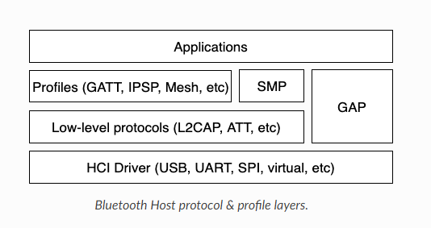

5. BLE¶
5.1. 概述¶
- BLE支持的特性：
- 蓝牙HOST特性
- GAP支持的角色：Peripheral与Central，Observer与Broadcaster
- GATT支持的角色：Server与Client
- 支持配对包括蓝牙4.2中的安全连接特性
- 支持永久存储蓝牙特定的设置和数据
- 蓝牙mesh特性
- TODO
- BLE协议栈的架构：
- 总共有3个主要层，共同构成了一个完整的蓝牙低能耗协议栈
- Host：这一层位于应用程序之下,由多个(非实时)网络和传输协议组成，使应用程序能够以标准和互操作的方式与对等设备通信。
- Controller：控制器实现了链路层(LE LL)，这是一种低层次的实时协议，它与无线电硬件一起提供了空中通信的标准互操作。LL处理包的接收和传输，保证数据的传递，并处理所有LL控制程序。
- Radio Hardware：实现所需的模拟和数字基带功能块，允许链路层固件在频谱的2.4GHz波段发送和接收。
- 主控Host：
- 
- 蓝牙Host层实现了所有高级协议和配置文件，最重要的是它为应用程序提供了高级API
- HCI:Host与controller接口
- L2CAP:逻辑链路控制和适应协议
- GATT:通用属性配置层（Generic Attribute Profile）
- GAP:通用访问配置层（Generic Access Profile）
- SMP:安全管理器配置层（Security Manager Specification）
- 应用Application
- 应用层是用户开发实际蓝牙应用的地方，包含必要的协议栈参数设置，以及各种功能函数的调用。我们分别从蓝牙从机和蓝牙主机两种设备来分析。
- 蓝牙从机
- 相关硬件和基础服务初始化
- 设置广播参数：广播数据，广播间隔，扫描回应等参数或者数据
- 设置Profile：添加从机服务、特征值，还有设置回调函数用于接收主机数据等
- 设置配对参数（可选）
- 启动广播，开始运行
- 等待相关事件，及事件处理，例如收到主机发来的数据，被链接等等
- 蓝牙主机
- 相关硬件和基础服务初始化
- 设置扫描参数
- 设置连接参数
- 设置配对参数（可选）
- 启动协议栈，开始运行
- 等待相关事件，及事件处理，例如扫描事件，从机的Notify事件等等。
5.2. BLE 接口¶
5.2.1. ble_controller_init¶
ble_controller_init 主要是对 ble controller 层初始化。
void ble_controller_init(uint8_t task_priority);
- task_priority 任务优先级
5.2.4. bt_le_adv_start¶
bt_le_adv_start 用来开启 BLE 广播。
int bt_le_adv_start(const struct bt_le_adv_param *param,const struct bt_data *ad, size_t ad_len,
const struct bt_data *sd, size_t sd_len);
- param 指向广播配置参数指针
- ad 指向广播包中数据指针
- ad_len 广播包中数据的长度
- sd 指向扫描响应包数据指针
- sd_len 扫描响应包数据的长度
5.2.5. bt_le_adv_update_data¶
bt_le_adv_update_data 用来更新 BLE 广播数据。
int bt_le_adv_update_data(const struct bt_data *ad, size_t ad_len,const struct bt_data *sd, size_t sd_len);
- ad 指向广播包中数据指针
- ad_len 广播包中数据的长度
- sd 指向扫描响应包数据指针
- sd_len 扫描响应包数据的长度
5.2.7. bt_le_scan_start¶
bt_le_scan_start 用来开启 BLE 扫描。
int bt_le_scan_start(const struct bt_le_scan_param *param, bt_le_scan_cb_t cb);
- param 指向扫描参数的指针
- cb 扫描回调函数
5.2.9. bt_le_whitelist_add¶
bt_le_whitelist_add 用来通过地址添加设备到白名单列表中。
int bt_le_whitelist_add(const bt_addr_le_t *addr);
- addr 指向需要添加设备地址的指针
5.2.10. bt_le_whitelist_rem¶
bt_le_whitelist_rem 用来将设备从白名单列表中移除。
int bt_le_whitelist_rem(const bt_addr_le_t *addr);
- addr 指向需要移除设备地址的指针
5.2.12. bt_le_set_chan_map¶
bt_le_set_chan_map 用来设置(LE)通道映射。
int bt_le_set_chan_map(u8_t chan_map[5]);
- chan_map 通道数组
5.2.13. bt_unpair¶
bt_unpair 用来清除配对信息。
int bt_unpair(u8_t id, const bt_addr_le_t *addr);
- id 本地标识(大多只是默认的BT ID)
- addr 远端设备地址，NULL或者BT_ADDR_LE_ANY清除所有远端设备
5.2.14. bt_conn_get_info¶
bt_conn_get_info 用来获取当前连接设备的信息。
int bt_conn_get_info(const struct bt_conn *conn, struct bt_conn_info *info);
- conn 指向当前连接的指针
- info 指向当前连接设备信息的指针
5.2.15. bt_conn_get_remote_dev_info¶
bt_conn_get_remote_dev_info 用来获取已连接设备的信息。
int bt_conn_get_remote_dev_info(struct bt_conn_info *info);
- info 指向当前连接设备信息的指针
5.2.16. bt_conn_le_param_update¶
bt_conn_le_param_update 用来更新连接参数。
int bt_conn_le_param_update(struct bt_conn *conn,const struct bt_le_conn_param *param);
- conn 指向当前连接的指针
- param 指向连接参数的指针
5.2.17. bt_conn_disconnect¶
bt_conn_disconnect 用来断开当前连接。
int bt_conn_disconnect(struct bt_conn *conn, u8_t reason);
- conn 指向当前连接的指针
- reason 断开当前连接的原因
5.2.18. bt_conn_create_le¶
bt_conn_create_le 用来创建连接。
struct bt_conn *bt_conn_create_le(const bt_addr_le_t *peer,const struct bt_le_conn_param *param);
- peer 需要连接设备地址的指针
- param 指向连接参数指针
- return 成功：有效的连接对象，否则失败
5.2.19. bt_conn_create_auto_le¶
bt_conn_create_auto_le 用来自动创建连接白名单列表中的设备。
int bt_conn_create_auto_le(const struct bt_le_conn_param *param);
- param 指向连接参数指针
5.2.20. bt_conn_create_auto_stop¶
bt_conn_create_auto_stop 用来停止自动创建连接白名单列表中的设备。
int bt_conn_create_auto_stop(void);
5.2.21. bt_le_set_auto_conn¶
bt_le_set_auto_conn 用来自动创建连接远端设备。
int bt_le_set_auto_conn(const bt_addr_le_t *addr,const struct bt_le_conn_param *param);
- addr 远端设备地址指针
- param 指向连接参数指针
5.2.22. bt_conn_create_slave_le¶
bt_conn_create_slave_le 用来发起定向的广播包给远端设备。
struct bt_conn *bt_conn_create_slave_le(const bt_addr_le_t *peer,const struct bt_le_adv_param *param);
- peer 远端设备地址指针
- param 指向广播参数的指针
- return 成功：有效的连接对象，否则失败
5.2.23. bt_conn_set_security¶
bt_conn_set_security 用来设置连接安全等级。
int bt_conn_set_security(struct bt_conn *conn, bt_security_t sec);
- conn 指向连接对象的指针
- sec 安全等级
5.2.24. bt_conn_get_security¶
bt_conn_get_security 用来获取当前连接的安全等级。
bt_security_t bt_conn_get_security(struct bt_conn *conn);
- conn 指向连接对象的指针
5.2.25. bt_conn_enc_key_size¶
bt_conn_enc_key_size 用来获取当前连接的加密key的大小。
u8_t bt_conn_enc_key_size(struct bt_conn *conn);
- conn 指向连接对象的指针
- return 加密key的大小
5.2.26. bt_conn_cb_register¶
bt_conn_cb_register 用来注册连接回调函数。
void bt_conn_cb_register(struct bt_conn_cb *cb);
- cb 连接回调函数
5.2.27. bt_set_bondable¶
bt_set_bondable 用来设置/清除SMP配对请求/响应数据认证需求中的绑定标志。
void bt_set_bondable(bool enable);
- enable 1，使能，0：不使能
5.2.28. bt_conn_auth_cb_register¶
bt_conn_auth_cb_register 用来注册认证回调函数。
int bt_conn_auth_cb_register(const struct bt_conn_auth_cb *cb);
- cb 回调函数指针
5.2.29. bt_conn_auth_passkey_entry¶
bt_conn_auth_passkey_entry 用密钥回复对方。
int bt_conn_auth_passkey_entry(struct bt_conn *conn, unsigned int passkey);
- conn 连接对象指针
- passkey 输入的密钥
5.2.30. bt_conn_auth_cancel¶
bt_conn_auth_cancel 用来取消认证过程。
int bt_conn_auth_cancel(struct bt_conn *conn);
- conn 连接对象指针
5.2.31. bt_conn_auth_passkey_confirm¶
bt_conn_auth_passkey_confirm 用来当密码匹配时，回复对方。
int bt_conn_auth_passkey_confirm(struct bt_conn *conn);
- conn 连接对象指针
5.2.32. bt_conn_auth_pincode_entry¶
bt_conn_auth_pincode_entry 用 PIN 码进行回复对方。
int bt_conn_auth_pincode_entry(struct bt_conn *conn, const char *pin);
- conn 连接对象指针
- pin PIN 码的指针
5.2.33. bt_le_read_rssi¶
bt_le_read_rssi 用来读取对方 RSSI 值。
int bt_le_read_rssi(u16_t handle,int8_t *rssi);
- handle 连接的句柄值
- rssi 保存 rssi 的指针
5.2.34. bt_get_local_address¶
bt_get_local_address 用来读取本机的地址。
int bt_get_local_address(bt_addr_le_t *adv_addr);
- adv_addr 保存读取地址的指针
5.3. 数据结构参考¶
bt_le_adv_param 数据结构：
/** LE Advertising Parameters. */
struct bt_le_adv_param {
/** Local identity */
u8_t id;
/** Bit-field of advertising options */
u8_t options;
/** Minimum Advertising Interval (N * 0.625) */
u16_t interval_min;
/** Maximum Advertising Interval (N * 0.625) */
u16_t interval_max;
#if defined(CONFIG_BT_STACK_PTS)
u8_t addr_type;
#endif
};
此数据结构用来配置广播参数，包括本地识别id、广播选项位域、广播间隙等，其中广播选项位域有如下枚举类型参数可选:
enum {
/** Convenience value when no options are specified. */
BT_LE_ADV_OPT_NONE = 0,
/** Advertise as connectable. Type of advertising is determined by
* providing SCAN_RSP data and/or enabling local privacy support.
*/
BT_LE_ADV_OPT_CONNECTABLE = BIT(0),
/** Don't try to resume connectable advertising after a connection.
* This option is only meaningful when used together with
* BT_LE_ADV_OPT_CONNECTABLE. If set the advertising will be stopped
* when bt_le_adv_stop() is called or when an incoming (slave)
* connection happens. If this option is not set the stack will
* take care of keeping advertising enabled even as connections
* occur.
*/
BT_LE_ADV_OPT_ONE_TIME = BIT(1),
/** Advertise using the identity address as the own address.
* @warning This will compromise the privacy of the device, so care
* must be taken when using this option.
*/
BT_LE_ADV_OPT_USE_IDENTITY = BIT(2),
/** Advertise using GAP device name */
BT_LE_ADV_OPT_USE_NAME = BIT(3),
/** Use low duty directed advertising mode, otherwise high duty mode
* will be used. This option is only effective when used with
* bt_conn_create_slave_le().
*/
BT_LE_ADV_OPT_DIR_MODE_LOW_DUTY = BIT(4),
/** Enable use of Resolvable Private Address (RPA) as the target address
* in directed advertisements when CONFIG_BT_PRIVACY is not enabled.
* This is required if the remote device is privacy-enabled and
* supports address resolution of the target address in directed
* advertisement.
* It is the responsibility of the application to check that the remote
* device supports address resolution of directed advertisements by
* reading its Central Address Resolution characteristic.
*/
BT_LE_ADV_OPT_DIR_ADDR_RPA = BIT(5),
/** Use whitelist to filter devices that can request scan response
* data.
*/
BT_LE_ADV_OPT_FILTER_SCAN_REQ = BIT(6),
/** Use whitelist to filter devices that can connect. */
BT_LE_ADV_OPT_FILTER_CONN = BIT(7),
};
如果需要发送一个广播包，配置可以如下：
param.id = 0;
param.options = (BT_LE_ADV_OPT_CONNECTABLE | BT_LE_ADV_OPT_USE_NAME | BT_LE_ADV_OPT_ONE_TIME);
param.interval_min = 0x00a0;
param.interval_max = 0x00f0;
bt_data 数据结构：
struct bt_data {
u8_t type;
u8_t data_len;
const u8_t *data;
};
此数据结构用来填充广播包中的数据，具体的数据包类型可以参考如下：
Service UUID
Local Name
Flags
Manufacturer Specific Data
TX Power Level
Secure Simple Pairing OOB
Security Manager OOB
Security Manager TK Value
Slave Connection Interval Range
Service Solicitation
Service Data
Appearance
Public Target Address
Random Target Address
Advertising Interval
LE Bluetooth Device Address
LE Role
Uniform Resource Identifier
LE Supported Features
Channel Map Update Indication
用该数据结构配置一个广播包数据，如下所示：
struct bt_data ad_discov[] = {
BT_DATA_BYTES(BT_DATA_FLAGS, (BT_LE_AD_GENERAL | BT_LE_AD_NO_BREDR)),
BT_DATA(BT_DATA_NAME_COMPLETE, "BL602-BLE-DEV", 13),
};
bt_le_scan_param 数据结构：
/** LE scan parameters */
struct bt_le_scan_param {
/** Scan type (BT_LE_SCAN_TYPE_ACTIVE or BT_LE_SCAN_TYPE_PASSIVE) */
u8_t type;
/** Bit-field of scanning filter options. */
u8_t filter_dup;
/** Scan interval (N * 0.625 ms) */
u16_t interval;
/** Scan window (N * 0.625 ms) */
u16_t window;
};
此数据结构用来填充扫描参数， type：为扫描类型有2种类型BT_LE_SCAN_TYPE_ACTIVE（0x01）、BT_LE_SCAN_TYPE_PASSIVE(0x00)。 filter_dup：0x00,除定向广告外，接受所有广播和扫描响应，0x01,只接收白名单列表中设备的广播和扫描响应。 interval：扫描间隙。 window：扫描窗口。
如果开启扫描请求，可以配置如下：
scan_param.type = BT_LE_SCAN_TYPE_PASSIVE
scan_param.filter_dup = 0x00
interval=BT_GAP_SCAN_SLOW_INTERVAL_1
window=BT_GAP_SCAN_SLOW_WINDOW_1
bt_le_conn_param 数据结构：
/** Connection parameters for LE connections */
struct bt_le_conn_param {
u16_t interval_min;
u16_t interval_max;
u16_t latency;
u16_t timeout;
#if defined(CONFIG_BT_STACK_PTS)
u8_t own_address_type;
#endif
};
此数据结构用来填充连接参数，interval_min：连接间隙最少值（0x0018），interval_max：连接间隙最大值(0x0028)， latency：指定为连接事件数的连接允许的最大从延迟。 timeout：连接超时时间。
配置该数据结构，如下：
interval_min=BT_GAP_INIT_CONN_INT_MIN(0x0018)
interval_max=BT_GAP_INIT_CONN_INT_MAX(0x0028)
latency=0
timeout=400
bt_conn 数据结构：
struct bt_conn {
u16_t handle;
u8_t type;
u8_t role;
ATOMIC_DEFINE(flags, BT_CONN_NUM_FLAGS);
/* Which local identity address this connection uses */
u8_t id;
#if defined(CONFIG_BT_SMP) || defined(CONFIG_BT_BREDR)
bt_security_t sec_level;
bt_security_t required_sec_level;
u8_t encrypt;
#endif /* CONFIG_BT_SMP || CONFIG_BT_BREDR */
/* Connection error or reason for disconnect */
u8_t err;
bt_conn_state_t state;
u16_t rx_len;
struct net_buf *rx;
/* Sent but not acknowledged TX packets with a callback */
sys_slist_t tx_pending;
/* Sent but not acknowledged TX packets without a callback before
* the next packet (if any) in tx_pending.
*/
u32_t pending_no_cb;
/* Completed TX for which we need to call the callback */
sys_slist_t tx_complete;
struct k_work tx_complete_work;
/* Queue for outgoing ACL data */
struct k_fifo tx_queue;
/* Active L2CAP channels */
sys_slist_t channels;
atomic_t ref;
/* Delayed work for connection update and other deferred tasks */
struct k_delayed_work update_work;
union {
struct bt_conn_le le;
#if defined(CONFIG_BT_BREDR)
struct bt_conn_br br;
struct bt_conn_sco sco;
#endif
};
#if defined(CONFIG_BT_REMOTE_VERSION)
struct bt_conn_rv {
u8_t version;
u16_t manufacturer;
u16_t subversion;
} rv;
#endif
};
此数据结构为当前连接数据结构，其中包括BLE蓝牙连接相关的参数，连接成功后该数据结构可以被用户调用。